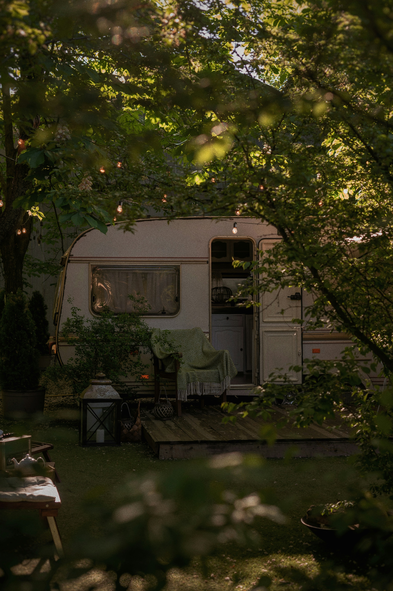
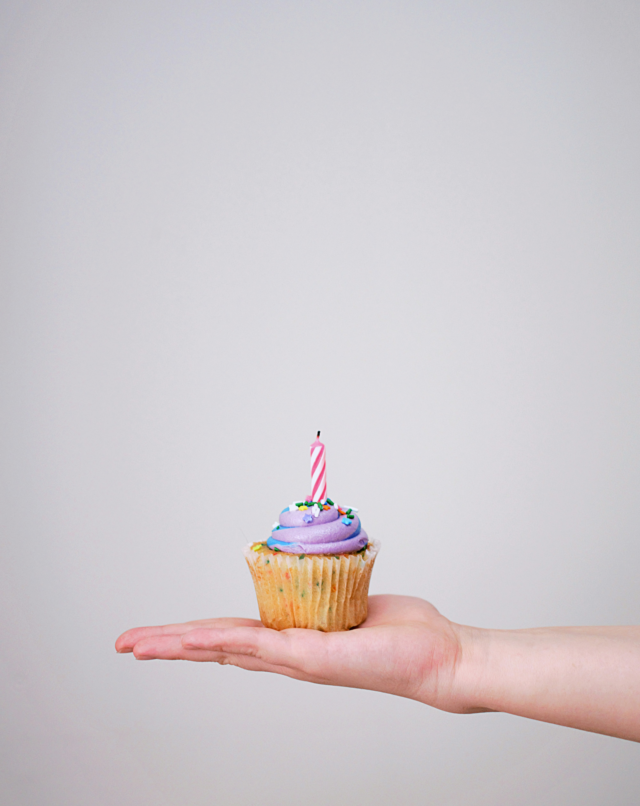
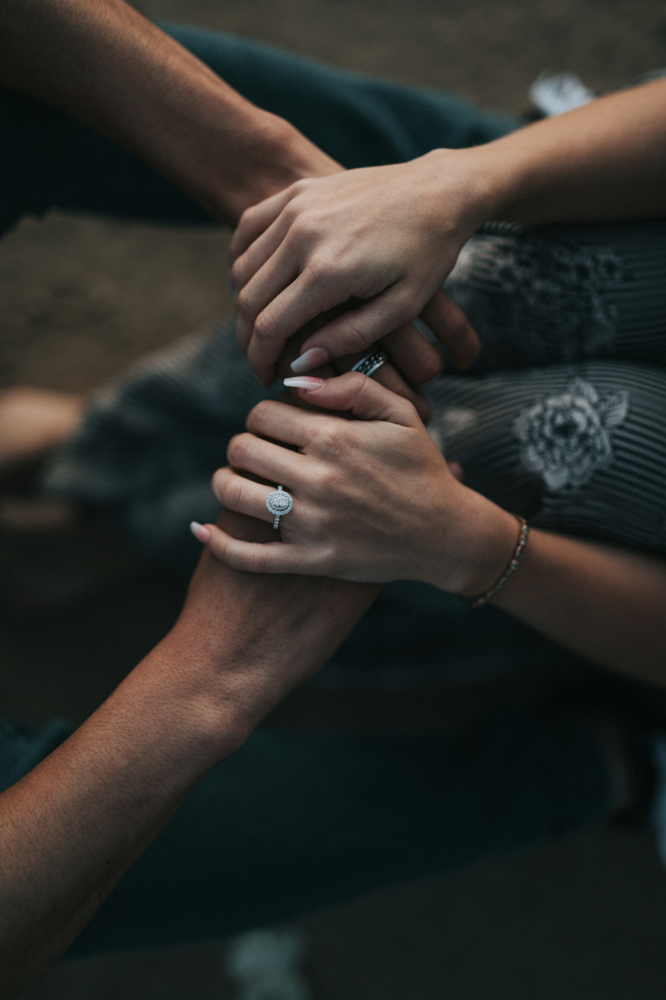

Ege'nin Kalbi IzmirNews'ta Atar!
Navigasyon
-
Gülşen Aksoy Mayosuyla Muhabirlere Yakalandı: Kaçış Çabası Başarısız Oldu!
,
Plajda Beklenmedik Görüntüler
Muhabirlerin sürekli peşinde olduğu Gülşen Aksoy, fotoğraf çekimlerinden kaçmak için çeşitli yollar denedi. Ancak, hem tatilin keyfini çıkarma hem de mahremiyetini koruma çabası yeterince başarılı olamadı. Aksoy, dikkatleri üzerine çekmemek ve rahat bir şekilde tatilini sürdürebilmek için yoğun bir mücadele verdi, ancak bu çabası basın mensuplarının ilgisini azaltmadı.
Sanatçıdan İlk Açıklama
Yaşadığı bu talihsiz durumu sosyal medya üzerinden yorumlayan Gülşen Aksoy, “Tatilim sırasında yaşanan bu durum beni biraz rahatsız etti. Herkesin özel anlarını korumak hakkı vardır. Umarım bir dahaki sefer daha huzurlu bir tatil geçirme fırsatım olur,” şeklinde bir açıklamada bulundu. Aksoy, tatilinin keyfini kaçıran bu olayın ardından dinlenmeye devam edeceğini belirtti
-
Ünlü Oyuncunun Karavan Tatili: Burası İzmir!
Karavan Tatili: Hem Rahatlama Hem Macera
Türkiye'nin ünlü oyuncularından Burcu Kürük, son günlerde tatilini sıradışı bir şekilde geçirmeye karar verdi. Hollywood yıldızları gibi lüks tatil köylerinde konaklamak yerine, Burcu Kürük tercih ettiği karavan tatili ile dikkatleri üzerine çekti. Ve bu tatilin adresi, İzmir’in gözde beldelerinden biri oldu.
İzmir’in Doğasında Unutulmaz Anlar
Ege’nin incisi İzmir, [Ünlü Oyuncunun Adı]’nın bu özgün tatil tercihiyle adeta parladı. Oyuncunun, Aegean kıyılarındaki saklı cennetlerden biri olan [Beldenin Adı]’nde karavanını park ettiği ve burada birkaç gün doğayla iç içe vakit geçirdiği öğrenildi. Doğanın sessizliğinde, denizin huzurunda geçirdiği anlar, ünlü oyuncunun sosyal medya hesaplarından takipçileriyle paylaşıldı.
-
Ünlü Sanatçıya Doğum Günü Sürprizi!
Hakan Altun, Cahide Alaçatı’da Unutulmaz Bir Gece Yaşattı
Hakan Altun, Cahide Alaçatı’daki sahnesinde muhteşem bir performansa imza attı. Gece boyunca sevilen şarkılarını seslendiren Altun, dinleyicilerine unutulmaz anlar yaşattı. Göz alıcı sahne dekorasyonunun ve etkileyici ışık gösterilerinin eşlik ettiği konserde, Altun’un enerjisi ve sahne hakimiyeti büyük beğeni topladı.Etkinliğin sürprizlerinden biri de, Hakan Altun için yapılan doğum günü kutlaması oldu. Konserin sonunda, sahneye çıkan pasta ve doğum günü tebrikleriyle Altun’un yeni yaşına girilmesi kutlandı. Dinleyiciler ve sahne ekibi, sanatçı için hazırlanan sürpriz doğum günü pastasının etrafında toplandı ve Hakan Altun’a doğum günü şarkısı söylediler. Bu özel anlar, geceye damgasını vurdu.
Hayranlardan Yoğun İlgi
Hakan Altun’un doğum günü kutlaması ve performansı, izleyenlerden yoğun ilgi gördü. Hem eski hem de yeni şarkılarının yer aldığı repertuarı, dinleyicilere keyifli anlar yaşattı. Hakan Altun’un doğum günü kutlaması sırasında gösterilen samimi ilgisi ve doğum günü pastası kesme anı, sosyal medyada da geniş yankı buldu.Hakan Altun, etkinlik sonrası yaptığı açıklamada, Cahide Alaçatı’da geçirdiği gecenin kendisi için çok özel olduğunu belirtti. "Doğum günü kutlamasını ve bu güzel geceyi burada geçirmiş olmak, benim için büyük bir mutluluk. Hayranlarımın desteği ve sevgisi, geceyi daha da anlamlı kıldı," dedi.
-
Cebine Akrep Kaçtı! Hüseyin Kurt: “Düğün Masrafları Ev Parası Kadar”
Düğün Masrafları Kafaları Karıştırıyor
Türk sinemasının sevilen isimlerinden Hüseyin Kurt, son dönemlerde evlilik ve düğün masrafları hakkında dikkat çekici açıklamalarda bulundu. Sanatçı, düğünlerin günümüzde ne kadar maliyetli olduğuna ve bu yüksek masrafların kendisini nasıl etkilediğine dair samimi düşüncelerini paylaştı.Hüseyin Kurt, düğünlerin bugün neredeyse bir ev parası kadar maliyete ulaşmasının kendisini derinden etkilediğini ifade etti. Sosyal medya hesaplarından yaptığı açıklamada, “Düğün masrafları, neredeyse bir ev parası kadar oluyor. Bu kadar para harcamak kalbimi kırıyor” şeklinde konuştu. Kurt, modern düğünlerin yüksek maliyetlerinin, genç çiftler için büyük bir finansal yük oluşturduğunu belirtti.
Evlenmek ve Düğün Masrafları Arasındaki Fark
Hüseyin Kurt’un bu açıklamaları, evlenmek isteyen çiftlerin düğün organizasyonları konusunda karşılaştıkları zorluklara dikkat çekti. Düğünlerin sadece düğün salonu, yemek ve müzik gibi unsurlardan ibaret olmadığını, aynı zamanda birçok ek masrafı da beraberinde getirdiğini vurgulayan Kurt, bu durumun birçok kişinin bütçesini zorladığını ifade etti.